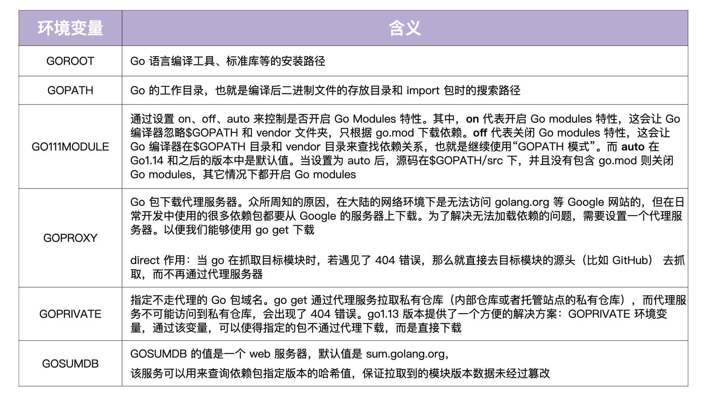
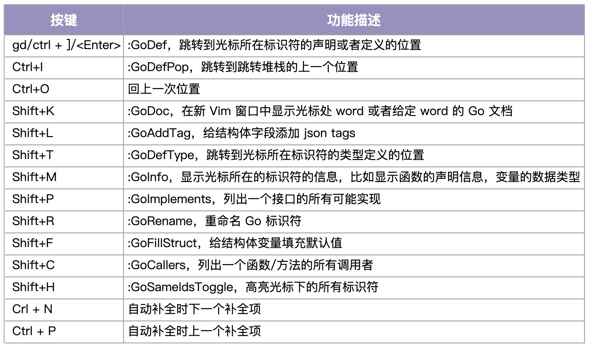
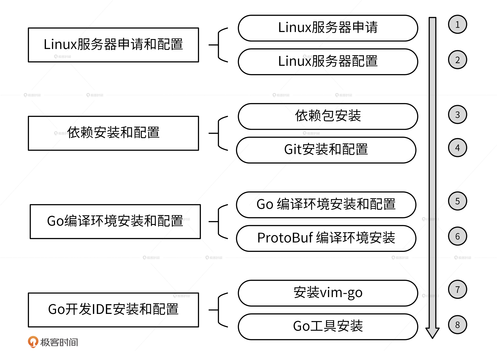

- 00 开篇词 从 0 开始搭建一个企业级 Go 应用.md.html
- 01 IAM系统概述：我们要实现什么样的 Go 项目？.md.html
- 02 环境准备：如何安装和配置一个基本的 Go 开发环境？.md.html
- 03 项目部署：如何快速部署 IAM 系统？.md.html
- 04 规范设计（上）：项目开发杂乱无章，如何规范？.md.html
- 05 规范设计（下）：commit 信息风格迥异、难以阅读，如何规范？.md.html
- 06 目录结构设计：如何组织一个可维护、可扩展的代码目录？.md.html
- 07 工作流设计：如何设计合理的多人开发模式？.md.html
- 08 研发流程设计（上）：如何设计 Go 项目的开发流程？.md.html
- 09 研发流程设计（下）：如何管理应用的生命周期？.md.html
- 10 设计方法：怎么写出优雅的 Go 项目？.md.html
- 11 设计模式：Go常用设计模式概述.md.html
- 12 API 风格（上）：如何设计RESTful API？.md.html
- 13 API 风格（下）：RPC API介绍.md.html
- 14 项目管理：如何编写高质量的Makefile？.md.html
- 15 研发流程实战：IAM项目是如何进行研发流程管理的？.md.html
- 16 代码检查：如何进行静态代码检查？.md.html
- 17 API 文档：如何生成 Swagger API 文档 ？.md.html
- 18 错误处理（上）：如何设计一套科学的错误码？.md.html
- 19 错误处理（下）：如何设计错误包？.md.html
- 20 日志处理（上）：如何设计日志包并记录日志？.md.html
- 21 日志处理（下）：手把手教你从 0 编写一个日志包.md.html
- 22 应用构建三剑客：Pflag、Viper、Cobra 核心功能介绍.md.html
- 23 应用构建实战：如何构建一个优秀的企业应用框架？.md.html
- 24 Web 服务：Web 服务核心功能有哪些，如何实现？.md.html
- 25 认证机制：应用程序如何进行访问认证？.md.html
- 26 IAM项目是如何设计和实现访问认证功能的？.md.html
- 27 权限模型：5大权限模型是如何进行资源授权的？.md.html
- 28 控制流（上）：通过iam-apiserver设计，看Web服务的构建.md.html
- 29 控制流（下）：iam-apiserver服务核心功能实现讲解.md.html
- 30 ORM：CURD 神器 GORM 包介绍及实战.md.html
- 31 数据流：通过iam-authz-server设计，看数据流服务的设计.md.html
- 32 数据处理：如何高效处理应用程序产生的数据？.md.html
- 33 SDK 设计（上）：如何设计出一个优秀的 Go SDK？.md.html
- 34 SDK 设计（下）：IAM项目Go SDK设计和实现.md.html
- 35 效率神器：如何设计和实现一个命令行客户端工具？.md.html
- 36 代码测试（上）：如何编写 Go 语言单元测试和性能测试用例？.md.html
- 37 代码测试（下）：Go 语言其他测试类型及 IAM 测试介绍.md.html
- 38 性能分析（上）：如何分析 Go 语言代码的性能？.md.html
- 39 性能分析（下）：API Server性能测试和调优实战.md.html
- 40 软件部署实战（上）：部署方案及负载均衡、高可用组件介绍.md.html
- 41 软件部署实战（中）：IAM 系统生产环境部署实战.md.html
- 42 软件部署实战（下）：IAM系统安全加固、水平扩缩容实战.md.html
- 43 技术演进（上）：虚拟化技术演进之路.md.html
- 44 技术演进（下）：软件架构和应用生命周期技术演进之路.md.html
- 45 基于Kubernetes的云原生架构设计.md.html
- 46 如何制作Docker镜像？.md.html
- 47 如何编写Kubernetes资源定义文件？.md.html
- 48 IAM 容器化部署实战.md.html
- 49 服务编排（上）：Helm服务编排基础知识.md.html
- 50 服务编排（下）：基于Helm的服务编排部署实战.md.html
- 51 基于 GitHub Actions 的 CI 实战.md.html
- 特别放送 Go Modules依赖包管理全讲.md.html
- 特别放送 Go Modules实战.md.html
- 特别放送 IAM排障指南.md.html
- 特别放送 分布式作业系统设计和实现.md.html
- 特别放送 给你一份Go项目中最常用的Makefile核心语法.md.html
- 特别放送 给你一份清晰、可直接套用的Go编码规范.md.html
- 直播加餐 如何从小白进阶成 Go 语言专家？.md.html
- 结束语 如何让自己的 Go 研发之路走得更远？.md.html
- 捐赠
02 环境准备：如何安装和配置一个基本的 Go 开发环境？
你好，我是孔令飞。
上一讲我们讲了 IAM 系统的功能和架构，接下来的两讲，我们就将它部署到你的服务器上。不过，在正式部署之前，我们还需要准备一个 Go 开发环境，这是因为我们是通过编译源码来获取部署需要的二进制文件的。
因此，今天这一讲，我先手把手带你配置好一个 Go 的开发环境，供你以后开发、编译用，下一讲再带你部署 IAM 系统。
想要配置一个 Go 开发环境，我们可以通过以下 4 步实现：
- Linux 服务器申请和配置
- 依赖安装和配置
- Go 编译环境安装和配置
- Go 开发 IDE 安装和配置
Linux 服务器申请和配置
毫无疑问，要安装一个 Go 开发环境，你首先需要有一个 Linux 服务器。Linux 服务器有很多操作系统可供选择，例如：CentOS、Ubuntu、RHEL、Debian 等，但目前生产环境用得最多的还是 CentOS 系统，为了跟生产环境保持一致，我们选择当前最新的 CentOS 版本：CentOS 8.2。
因为本专栏的所有操作都是在 CentOS 8.2 系统上进行的，为了避免环境不一致导致的操作失败，我建议你也使用 CentOS 8.2。安装一个 Linux 服务器需要两步：服务器申请和配置。
Linux 服务器申请
我们可以通过以下 3 种方式来安装一个 CentOS 8.2 系统。
- 在物理机上安装一个 CentOS 8.2 系统。
- 在 Windows/MacBook 上安装虚拟机管理软件，用虚拟机管理软件创建 CentOS 8.2 虚拟机。其中，Windows 建议用 VMWare Workstation 来创建虚拟机，MacBook 建议用 VirtualBox 来创建虚拟机。
- 在诸如腾讯云、阿里云、华为云等平台上购买一个虚拟机，并预装 CentOS 8.2 系统。
Linux 服务器配置
申请完 Linux 服务之后，我们需要通过 SecureCRT 或 Xshell 等工具登录 Linux 服务器，并对服务器做一些简单必要的配置，包括创建普通用户、添加 sudoers、配置 $HOME/.bashrc 文件。接下来，我们一一来说。
第一步，用Root 用户登录Linux 系统，并创建普通用户。
一般来说，一个项目会由多个开发人员协作完成，为了节省企业成本，公司不会给每个开发人员都配备一台服务器，而是让所有开发人员共用一个开发机，通过普通用户登录开发机进行开发。因此，为了模拟真实的企业开发环境，我们也通过一个普通用户的身份来进行项目的开发，创建方法如下：
# useradd going # 创建 going 用户，通过 going 用户登录开发机进行开发
# passwd going # 设置密码
Changing password for user going.
New password:
Retype new password:
passwd: all authentication tokens updated successfully.
不仅如此，使用普通用户登录和操作开发机也可以保证系统的安全性，这是一个比较好的习惯，所以我们在日常开发中也要尽量避免使用 Root 用户。
第二步，添加 sudoers。
我们知道很多时候，普通用户也要用到 Root 的一些权限，但 Root 用户的密码一般是由系统管理员维护并定期更改的，每次都向管理员询问密码又很麻烦。因此，我建议你将普通用户加入到 sudoers 中，这样普通用户就可以通过 sudo 命令来暂时获取 Root 的权限。具体来说，你可以执行如下命令添加：
# sed -i '/^root.*ALL=(ALL).*ALL/a\going\tALL=(ALL) \tALL' /etc/sudoers
第三步，替换 CentOS 8.4 系统中自带的 Yum 源。
由于 Red Hat 提前宣布 CentOS 8 于 2021 年 12 月 31 日停止维护，官方的 Yum 源已不可使用，所以需要切换官方的 Yum 源，这里选择阿里提供的 Yum 源。切换命令如下：
# mv /etc/yum.repos.d /etc/yum.repos.d.bak # 先备份原有的 Yum 源
# mkdir /etc/yum.repos.d
# wget -O /etc/yum.repos.d/CentOS-Base.repo https://mirrors.aliyun.com/repo/Centos-vault-8.5.2111.repo
# yum clean all && yum makecache
第四步，用新的用户名（going）和密码登录Linux 服务器。这一步也可以验证普通用户是否创建成功。
第五步，配置 $HOME/.bashrc 文件。
我们登录新服务器后的第一步就是配置 \(HOME/.bashrc 文件，以使 Linux 登录 shell 更加易用，例如配置 `LANG` 解决中文乱码，配置 `PS1` 可以避免整行都是文件路径，并将 `\)HOME/bin加入到PATH` 路径中。配置后的内容如下：
# .bashrc
# User specific aliases and functions
alias rm='rm -i'
alias cp='cp -i'
alias mv='mv -i'
# Source global definitions
if [ -f /etc/bashrc ]; then
. /etc/bashrc
fi
# User specific environment
# Basic envs
export LANG="en_US.UTF-8" # 设置系统语言为 en_US.UTF-8，避免终端出现中文乱码
export PS1='[\u@dev \W]\$ ' # 默认的 PS1 设置会展示全部的路径，为了防止过长，这里只展示："用户名@dev 最后的目录名"
export WORKSPACE="$HOME/workspace" # 设置工作目录
export PATH=$HOME/bin:$PATH # 将 $HOME/bin 目录加入到 PATH 变量中
# Default entry folder
cd $WORKSPACE # 登录系统，默认进入 workspace 目录
有一点需要我们注意，在 export PATH 时，最好把 $PATH 放到最后，因为我们添加到目录中的命令是期望被优先搜索并使用的。配置完 $HOME/.bashrc 后，我们还需要创建工作目录 workspace。将工作文件统一放在 $HOME/workspace 目录中，有几点好处。
- 可以使我们的
$HOME目录保持整洁，便于以后的文件查找和分类。 - 如果哪一天
/分区空间不足，可以将整个workspace目录 mv 到另一个分区中，并在/分区中保留软连接，例如：/home/going/workspace -> /data/workspace/。 - 如果哪天想备份所有的工作文件，可以直接备份
workspace。
具体的操作指令是$ mkdir -p $HOME/workspace。配置好 $HOME/.bashrc 文件后，我们就可以执行 bash 命令将配置加载到当前 shell 中了。
至此，我们就完成了 Linux 开发机环境的申请及初步配置。
依赖安装和配置
在 Linux 系统上安装 IAM 系统会依赖一些 RPM 包和工具，有些是直接依赖，有些是间接依赖。为了避免后续的操作出现依赖错误，例如，因为包不存在而导致的编译、命令执行错误等，我们先统一依赖安装和配置。安装和配置步骤如下。
第一步，安装依赖。
首先，我们在 CentOS 系统上通过 yum 命令来安装所需工具的依赖，安装命令如下：
$ sudo yum -y install make autoconf automake cmake perl-CPAN libcurl-devel libtool gcc gcc-c++ glibc-headers zlib-devel git-lfs telnet lrzsz jq expat-devel openssl-devel
虽然有些 CentOS 8.2 系统已经默认安装这些依赖了，但是为了确保它们都能被安装，我仍然会尝试安装一遍。如果系统提示 Package xxx is already installed.，说明已经安装好了，你直接忽略即可。
第二步，安装 Git。
因为安装 IAM 系统、执行 go get 命令、安装 protobuf 工具等都是通过 Git 来操作的，所以接下来我们还需要安装 Git。由于低版本的 Git 不支持--unshallow 参数，而 go get 在安装 Go 包时会用到 git fetch --unshallow 命令，因此我们要确保安装一个高版本的 Git，具体的安装方法如下：
$ cd /tmp
$ wget --no-check-certificate https://mirrors.edge.kernel.org/pub/software/scm/git/git-2.36.1.tar.gz
$ tar -xvzf git-2.36.1.tar.gz
$ cd git-2.36.1/
$ ./configure
$ make
$ sudo make install
$ git --version # 输出 git 版本号，说明安装成功
git version 2.36.1
注意啦，按照上面的步骤安装好之后，我们要把 Git 的二进制目录添加到 PATH 路径中，不然 Git 可能会因为找不到一些命令而报错。你可以通过执行以下命令添加目录：
tee -a $HOME/.bashrc <<'EOF'
# Configure for git
export PATH=/usr/local/libexec/git-core:$PATH
EOF
第三步，配置 Git。我们直接执行如下命令配置 Git：
$ git config --global user.name "Lingfei Kong" # 用户名改成自己的
$ git config --global user.email "[email protected]" # 邮箱改成自己的
$ git config --global credential.helper store # 设置 Git，保存用户名和密码
$ git config --global core.longpaths true # 解决 Git 中 'Filename too long' 的错误
除了按照上述步骤配置 Git 之外，我们还有几点需要注意。
首先，在 Git 中，我们会把非 ASCII 字符叫做 Unusual 字符。这类字符在 Git 输出到终端的时候默认是用 8 进制转义字符输出的（以防乱码），但现在的终端多数都支持直接显示非 ASCII 字符，所以我们可以关闭掉这个特性，具体的命令如下：
$ git config --global core.quotepath off
其次，GitHub 限制最大只能克隆 100M 的单个文件，为了能够克隆大于 100M 的文件，我们还需要安装 Git Large File Storage，安装方式如下：
$ git lfs install --skip-repo
好啦，现在我们就完成了依赖的安装和配置。
Go 编译环境安装和配置
我们知道，Go 是一门编译型语言，所以在部署 IAM 系统之前，我们需要将代码编译成可执行的二进制文件。因此我们需要安装 Go 编译环境。
除了 Go，我们也会用 gRPC 框架展示 RPC 通信协议的用法，所以我们也需要将 ProtoBuf 的.proto 文件编译成 Go 语言的接口。因此，我们也需要安装 ProtoBuf 的编译环境。
Go 编译环境安装和配置
安装 Go 语言相对来说比较简单，我们只需要下载源码包、设置相应的环境变量即可。
首先，我们从 Go 语言官方网站下载对应的 Go 安装包以及源码包，这里我下载的是 go1.18.3 版本：
$ wget -P /tmp/ https://golang.google.cn/dl/go1.18.3.linux-amd64.tar.gz
接着，我们完成解压和安装，命令如下：
$ mkdir -p $HOME/go
$ tar -xvzf /tmp/go1.18.3.linux-amd64.tar.gz -C $HOME/go
$ mv $HOME/go/go $HOME/go/go1.18.3
接着，我们执行以下命令，将下列环境变量追加到$HOME/.bashrc 文件中。
$ tee -a $HOME/.bashrc <<'EOF'
# Go envs
export GOVERSION=go1.18.3 # Go 版本设置
export GO_INSTALL_DIR=$HOME/go # Go 安装目录
export GOROOT=$GO_INSTALL_DIR/$GOVERSION # GOROOT 设置
export GOPATH=$WORKSPACE/golang # GOPATH 设置
export PATH=$GOROOT/bin:$GOPATH/bin:$PATH # 将 Go 语言自带的和通过 go install 安装的二进制文件加入到 PATH 路径中
export GO111MODULE="on" # 开启 Go moudles 特性
export GOPROXY=https://goproxy.cn,direct # 安装 Go 模块时，代理服务器设置
export GOPRIVATE=
export GOSUMDB=off # 关闭校验 Go 依赖包的哈希值
EOF
为什么要增加这么多环境变量呢？这是因为，Go 语言是通过一系列的环境变量来控制 Go 编译器行为的。因此，我们一定要理解每一个环境变量的含义。

因为 Go 以后会用 Go modules 来管理依赖，所以我建议你将 GO111MODULE 设置为 on。
在使用模块的时候，$GOPATH 是无意义的，不过它还是会把下载的依赖储存在 $GOPATH/pkg/mod 目录中，也会把 go install 的二进制文件存放在 $GOPATH/bin 目录中。
另外，我们还要将$GOPATH/bin、$GOROOT/bin 加入到 Linux 可执行文件搜索路径中。这样一来，我们就可以直接在 bash shell 中执行 go 自带的命令，以及通过 go install 安装的命令。
然后就是进行测试了，如果我们执行 go version 命令可以成功输出 Go 的版本，就说明 Go 编译环境安装成功。具体的命令如下：
$ bash
$ go version
go version go1.18.3 linux/amd64
最后，初始化工作区。
本专栏使用的 Go 版本为 go1.18.3，go1.18.3 支持多模块工作区，所以这里也需要初始化工作区。初始化命令如下：
$ mkdir -p $GOPATH && cd $GOPATH
$ go work init
$ go env GOWORK # 执行此命令，查看 go.work 工作区文件路径
/home/going/workspace/golang/go.work
ProtoBuf 编译环境安装
接着，我们再来安装 protobuf 的编译器 protoc。protoc 需要 protoc-gen-go 来完成 Go 语言的代码转换，因此我们需要安装 protoc 和 protoc-gen-go 这 2 个工具。它们的安装方法比较简单，你直接看我下面给出的代码和操作注释就可以了。
# 第一步：安装 protobuf
$ cd /tmp/
$ git clone -b v3.21.1 --depth=1 https://github.com/protocolbuffers/protobuf
$ cd protobuf
$ ./autogen.sh
$ ./configure
$ make
$ sudo make install
$ protoc --version # 查看 protoc 版本，成功输出版本号，说明安装成功
libprotoc 3.21.1
# 第二步：安装 protoc-gen-go
$ go install github.com/golang/protobuf/[email protected]
当你第一次执行 go install 命令的时候，因为本地无缓存，所以需要下载所有的依赖模块。因此安装速度会比较慢，请你耐心等待。
Go 开发 IDE 安装和配置
编译环境准备完之后，你还需要一个代码编辑器才能开始 Go 项目开发。为了提高开发效率，你还需要将这个编辑器配置成 Go IDE。
目前，GoLand、VSCode 这些 IDE 都很优秀，但它们都是 Windows 系统下的 IDE。在 Linux 系统下我们可以选择将 Vim 配置成 Go IDE。熟练 Vim IDE 操作之后，开发效率不输 GoLand 和 VSCode。有多种方法可以配置一个Vim IDE，这里我选择使用 vim-go 将 Vim 配置成一个 Go IDE。vim-go 是社区比较受欢迎的 Vim Go 开发插件，可以用来方便地将一个 Vim 配置成 Vim IDE。
Vim IDE 的安装和配置分为以下2步。
第一步，安装 vim-go。
安装命令如下：
$ rm -f $HOME/.vim; mkdir -p ~/.vim/pack/plugins/start/
$ git clone --depth=1 https://github.com/fatih/vim-go.git ~/.vim/pack/plugins/start/vim-go
第二步，Go 工具安装。
vim-go 会用到一些 Go 工具，比如在函数跳转时会用到 guru、godef 工具，在格式化时会用到 goimports，所以你也需要安装这些工具。安装方式如下：执行 vi /tmp/test.go，然后输入 :GoInstallBinaries 安装 vim-go 需要的工具。
安装后的 Go IDE 常用操作的按键映射如下表所示：

总结
这一讲，我们一起安装和配置了一个 Go 开发环境，为了方便你回顾，我将安装和配置过程绘制成了一个流程图，如下所示。

有了这个开发环境，接下来我们就可以在学习的过程中随时进行编码，来熟悉和验证知识点了，所以你一定要在学习后面的课程之前先完成这一讲的部署。
课后练习
- 试着编写一个 main.go，在 main 函数中打印
Hello World，并执行go run main.go运行代码，测试 Go 开发环境。 - 试着编写一个 main.go，代码如下：
package main
import "fmt"
func main() {
fmt.Println("Hello World")
}
将鼠标放在 Println 上，键入 Enter 键跳转到函数定义处，键入 Ctrl + I 返回到跳转点。
期待在留言区看到你的思考和答案，也欢迎和我一起探讨环境安装过程中的问题，我们下一讲见！
© 2019 - 2023 Liangliang Lee. Powered by gin and hexo-theme-book.